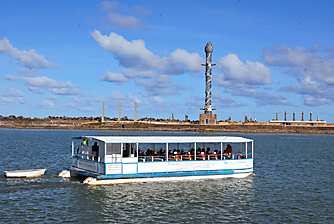
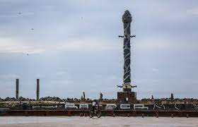

A Praça Rio Branco é comumente chamada de Marco Zero do Recife pois é nela que fica localizado o marco zero utilizado nas medidas oficiais de distâncias rodoviárias locais.

O local se tornou um dos pontos turisticos de destaque pois permite uma grande variedade de atividades possiveis de serem realizadas, desde passeios pelas ruas históricas, sendo a Rua do Bom Jesus eleita a 3ª rua mais bonita do mundo até passeios de barco que são oferecidos dando amplitude ao turismo na cidade.
Abrigando também o parque das esculturas do artista Francisco Brennand, que exibe a famosa Torre de Cristal, este localizado no dique que fica de frente para a praça.
